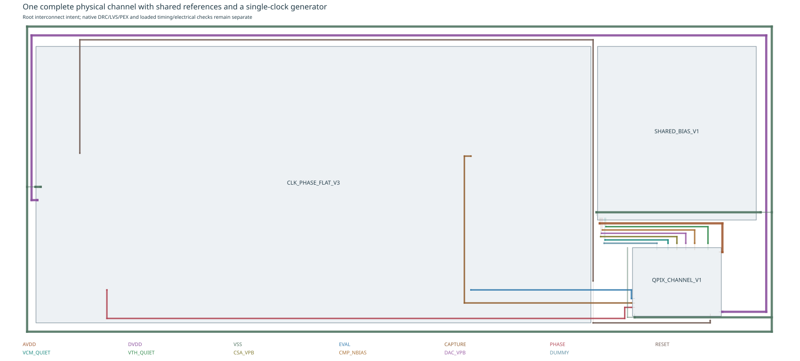
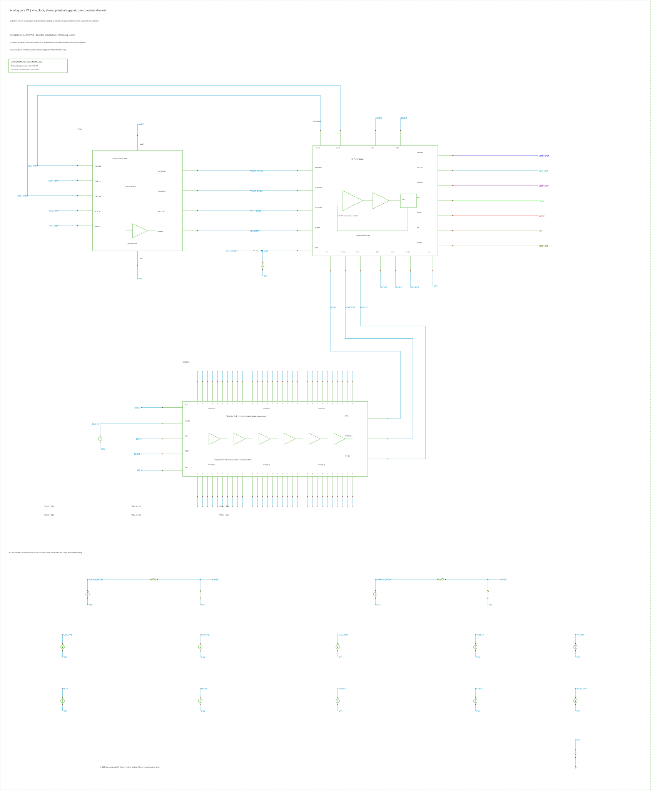

Architecture and detector replay · CSA · Comparator · Clock · Shared references
Physical channel: integration and calibration
Loading pinned native evidence…
The repeated channel contains the accepted CSA, preamplified comparator, unchanged STD controller and current-steering replenisher. Shared references and the programmable phase generator sit outside that channel. One clock enters the core; the static trim nets represent future register outputs. This milestone implements no configuration registers, backend event capture, timestamps, links or network.
This page records integration progress. The full physical-core detector replay, 5/10/20/50-MHz room/cold matrix, calibrated short-window reconstruction and clocked transient-noise/heat acceptance remain open. The older architecture replay is a separate study.
Complete physical core and inspectable sources

The 160 × 124-µm repeated channel is maintained as Modules/QPIX_CHANNEL_V1. The complete core is now maintained as Modules/QPIX_ANALOG_CORE_V1, with independently verified three-view copy, complete mask/master-tree/81-port equality and identical exported CDL. Its strict LVS/completed PEX and local geometry checks refer to that unchanged design. Electrical integration remains a candidate; chip-density obligations and manual review remain separate.

Individual unbuffered comparator observations stay at their native contacts. The earlier perimeter fanout increased RAW's parasitic self/coupling sum from 21.34 fF in the accepted comparator to 28.95 fF and produced a false high decision before injection. Localizing the ports lowers it to 21.66 fF and removes that demonstrated failure. These figures exclude recognized intrinsic device capacitance.
Native matching, density and coordinate audit
Initial charge state at 77 K
The source DC solve automatically loosened its requested relative tolerance from 3 × 10−5 to 0.005. That point is a numerical bootstrap. With the clock stopped, RESET/INHIBIT asserted and zero detector current, the complete physical core then settles for 100 ns at the original transient tolerances. The numerical DC closure is absent; the physical CSA still has no normal reset across Cf.
| Native observation | Final 20-ns span (µV) | Declared span limit (µV) |
|---|
Every native point is retained in this short scope. The stationary final checkpoint initializes acquisition, with all node/current scalars and the first saved voltages checked independently. This establishes a numerical starting charge state, not physical power-up or a continuous hidden-state restart. It does not qualify the exploratory cold device model.
Initialization and bootstrap evidence
Calibrate signed packet charge at the actual bias
A local extracted fixture contains the real shared bank, STD controller and replenisher. An explicit current probe and clamped SUM measure both switching lobes over complete periods. Sixteen consecutive pulses expose deterministic history; the mean uses the final fourteen. Behavioral PHASE is labelled as a module-test command, and the clock generator/root assembly routing are excluded from this calibration.
| Model | Seed scale | Net packet (fC) | Deterministic cycle RMS (fC) | Local return capacity at 50 MHz (nA) |
|---|
The low-seed cold sign change is reproduced with another numerical initializer. It represents the signed balance of opposing switching lobes, and needs circuit/model validation; it is not a charge-conservation violation. The cold cards are exploratory DC fits with inherited, unmeasured noise/CV. Room operation uses factory models.
These local 0.1-fC holdouts establish a bias starting point. They are not frozen full-core reconstruction constants. Actual routed pulse widths, SUM compliance, residual stored charge and repeatable interference still enter closed-loop calibration.
Independent full-core calibration at room temperature and 77 K
The complete extracted clock, shared bank and channel run together. At 50 MHz, a known 0.2-fC input with automatic returns inhibited measures integration gain; two forced returns measure the quantum. The separate 0.3-fC / three-return holdout never enters the fit. The room 10-MHz calibration uses 1.0-fC training and 1.5-fC holdout inputs with the same two/three-return protocol. FORCE and INHIBIT are shown alongside every internal phase and decision. No stochastic noise is enabled.
| Calibration quantity | Measured value |
|---|
The original analysis fitted a constant drift to clock turn-on and failed the declared quiet-span screen. The corrected version obtains drift from the training quiet interval before the holdout, and checks all seven measurement endpoints. It retains the same 0.02-fC span and 0.03-fC holdout-error limits. Analytic controls with known charge and startup relaxation validate that distinction; the original failed analysis remains retained.
Both models pass the bounded forced-return calibration with the same limits. Completed independent automatic-feedback records follow below; remaining rates, detector reconstruction and noise acceptance stay separate. The cold quantum gives about 3.928 nA return capacity at 50 MHz, close to the original event's 3.907-nA peak: validate this small reserve or retune the master seed before claiming event/noise headroom. The physical replay remains unscaled. The analog residual is a diagnostic, never decoder information. Short quiet-window slopes are not automatically a long-record pedestal correction.
Calibration checks, endpoint stability and retained analysis failure
Transfer the frozen calibration to automatic feedback
After 400 ns of clock operation, an independent known-current pulse enters the complete 50-MHz physical core. FORCE stays low. The actual comparator, capture latch and PHASE generate every replenishment pulse. Each record uses its own independently frozen charge quantum and integration gain. Only completed native records appear in the selector.
Stochastic noise is disabled. The fine waveform structure below records deterministic clock and switching interference, including the repeated DUMMY return excursions.
| Independent check | Measured value |
|---|
The endpoint checks require three fixed-phase samples before input and after recovery, no replenishment inside either endpoint window, and at least eight clocks after the last return. The 0.03-fC closure and 0.02-fC endpoint-span limits are unchanged. Every completed record retains its actual pass/fail verdict and checks. Residual charge is a diagnostic of charge conservation: it is never supplied to the count-only waveform decoder. This bounded transfer does not qualify the full detector event, other operating modes or stochastic noise.
Frozen constants, charge ledger, checks and complete-cycle source work
Full records of the initialized tracking controls
HELD retains the comparator decision when CAPTURE closes. EVENT qualifies that decision with FORCE, INHIBIT and RESET. EN is EVENT AND PHASE and drives the actual replenisher. A high HELD/EVENT over several clocks requests consecutive physical return pulses. Each logical trace below has its own row and shares the detector-current time axis.
| Control | Injected charge (fC) | Returns / before input | Maximum / final CSA shift (mV) | Observed CPU threads |
|---|
Full checkpoints establish the no-reset CSA charge state. Native readback and the first saved sample are checked independently. Numerical starting guesses are free during new DC solves. These initialized controls do not claim physical integrator startup. A node/current checkpoint also does not preserve all hidden transient history; continuous restart needs a separately qualified savefile/recover procedure.
The complete cold control has eight returns: two near 42 and 62 ns, before the input starts at 80 ns, and six afterward. All twenty observed captures and stable EN-gating checks agree. These early returns occur in a noise-off clock-start record. Keep their deterministic startup/interference and threshold contribution separate from stochastic noise; this is not a false-trigger probability measurement. Its maximum/final CSA shift is 10.218/−3.389 mV. The independent full-core calibrations above now establish clock-on strobe references; these short startup controls remain separate from automatic-transfer and detector-event acceptance.
The room 10-MHz control uses a fresh measured initial state and the 0.96 replenisher seed. All eight captures agree, stable EN gating passes, and two returns occur after the 0.8-fC input, with none before it. PHASE is 4.095 ns; maximum/final CSA shift is 18.068/−4.970 mV. Whole-fixture draw is 518.062 µW over seven complete cycles. Its HPA comparison passes every original bound, with CSA peak/RMS differences of 6.037/1.985 µV and unchanged decisions. Independent calibration passes: 50.803-fF effective feedback and 0.525667-fC quantum, with +0.000138/−0.000421-fC input/return holdout errors. The separate 4-fC automatic-feedback holdout also passes all eight checks: eight returns and diagnostic residual charge give +0.004094-fC ledger error without refitting. Detector and noise acceptance remain open.
Where available, the displayed packet sum uses only counts and the independent local clamp calibration at the same seed and 50-MHz rate. It remains provisional. Uncalibrated modes omit this overlay. Preserve the residual CSA displacement and establish closed-loop calibration before judging absolute or short-window error. No stochastic noise is injected into these deterministic traces.
Supply work and numerical accuracy
Finite rail feeds and explicit 100-pF VDD/VSS decoupling remain present. The plot includes upstream AVDD/DVDD work and positive external clock/control/voltage-reference work over complete cycles. No reservoir energy or reference/driver power is subtracted. Each fixture contains one channel, one actual shared bank and the complete clock; there is no hypothetical channel-count division.
HPA acceleration must preserve decisions, edges, pulse widths, frontend waveforms and complete-cycle work against an unreduced control. Original limits are 25 ps for edges/widths, 50 µV peak and 10 µV RMS frontend difference, and 0.5% supply-energy difference. Failed controls remain visible.
The complete warm 50-MHz HPA control passes every original bound: CSA maximum/RMS difference is 16.106/1.155 µV and the largest logical-edge difference is 0.209 ps. It retains all six decisions and takes 693 s versus 1022 s unreduced, with eight threads in both runs. This is a bounded numerical qualification; its modest speed gain does not establish practical runtime or accuracy for the long detector replay, other clock modes or stochastic noise.
The matching complete cold control also passes every original bound, retaining all eight decisions including the two early returns. Its CSA peak/RMS difference is 18.294/1.540 µV, and runtime is 47.6 minutes versus 67.0 minutes unreduced, with eight threads. This qualifies the conservative setting for these bounded 50-MHz room/cold controls; cold calibration, other operating modes, long replay and noise remain separate checks.
A less conservative preservation list allowed numerical reduction of root capacitors while retaining every physical value in the input. That control changes decisions and gives 3.324-mV peak / 655-µV RMS CSA difference, so it is rejected. Its energy check passes, which alone does not establish equivalent circuit behavior. The conservative profile remains selected.
| Numerical comparison | Passes original bounds | CSA maximum / RMS difference (µV) | Maximum logic-edge difference (ps) |
|---|
Long native runs request APS with eight threads; actual thread use and elapsed time are retained. Cold numerical differences do not establish a physical model failure. All current native/simulation data remain under ignored T018/build/.
Complete physical detector replay
The source keeps all 2,002 original SI samples, 120 µs duration, 38.24787721 fC total and 3.90696 nA peak. Only completed native records with independently frozen same-mode calibration and automatic-transfer checks enter this viewer. Each result retains its actual pass/fail verdict.
Input and count-only currents receive the same causal filter. Its delay remains visible; gain, time shift, analogue endpoints and short-slope pedestal are excluded from decoding. The acquisition integrals begin after the declared startup discard.
| Native reconstruction quantity | Measured value |
|---|
The current, CSA/reference and all clock/controller signals below share a complete time range. Zoom in either figure to inspect the corresponding interval in both. Logical points remain in the full-record overview; zoomed analogue detail retains the supplied native-derived points and their source display tolerances. All plots export SVG.
Native checks, frozen constants, source work and display provenance
Evidence and remaining acceptance
The next checks retain the unscaled 2,002-point, 120-µs detector-current file: 38.24787721 fC total and 3.90696 nA peak. Cf, quantum and rate are tuned coherently: nominal 1/0.5/0.25/0.1 fC at 5/10/20/50 MHz, with the physical 50-fF Cf and 3-pF detector initially fixed. Clocked noise must support the useful waveform detail; deterministic switching interference remains a separate baseline.